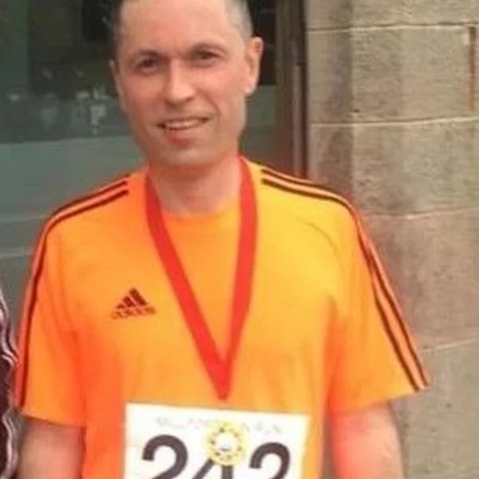
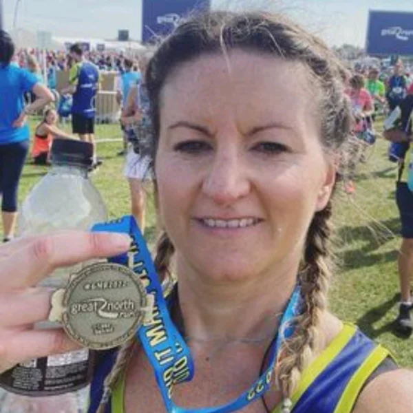
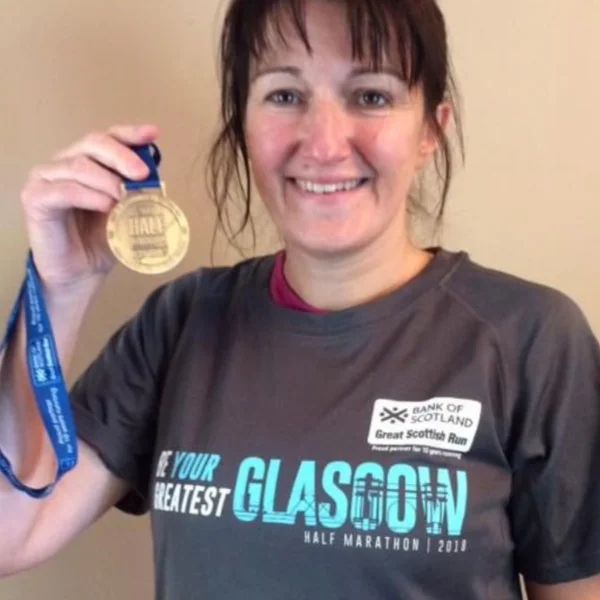
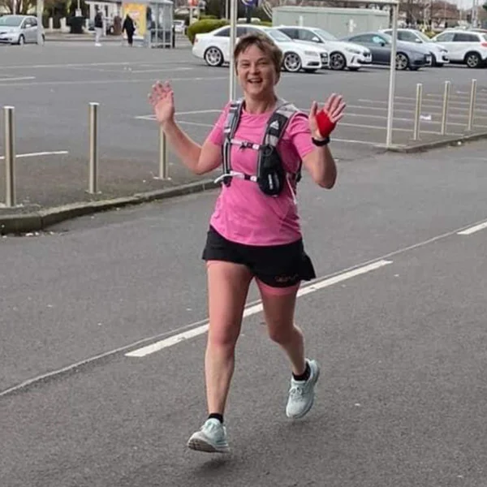

Jog leader
Paul Cook
Helping make every club run welcoming, social and enjoyable.
Our kind of running

What to expect
We are a friendly community of local runners who enjoy getting out around the Garnock Valley. There is no need to be the fastest person in the room: we value encouragement, a good route and the post-run chat.
Meeting details change each week, so our Facebook group is the best place for the time, meeting point and any route notes.
Join on Facebook →The people who keep us moving
Say hello at the start of your first run. Our jog leaders are here to help everyone feel part of the group.

Jog leader
Helping make every club run welcoming, social and enjoyable.

Jog leader
Here to encourage runners as they build confidence and fitness.

Jog leader
Keeping the group moving, connected and smiling along the way.

Jog leader
Supporting local runners to enjoy the journey, whatever their pace.
New runners
There is no need to be a seasoned runner or know anyone before you arrive. Let us know it is your first time, and we will make sure you feel at home.
Complete registration →Find the confirmed meeting point and start time in our Facebook group before you set off.
Wear trainers you trust and pack a light waterproof layer. Scottish weather likes to keep us guessing.
Introduce yourself to a jog leader when you arrive. We will help you find your pace and enjoy the run.
Run at your own pace. The aim is to get outside, feel good and come back smiling.